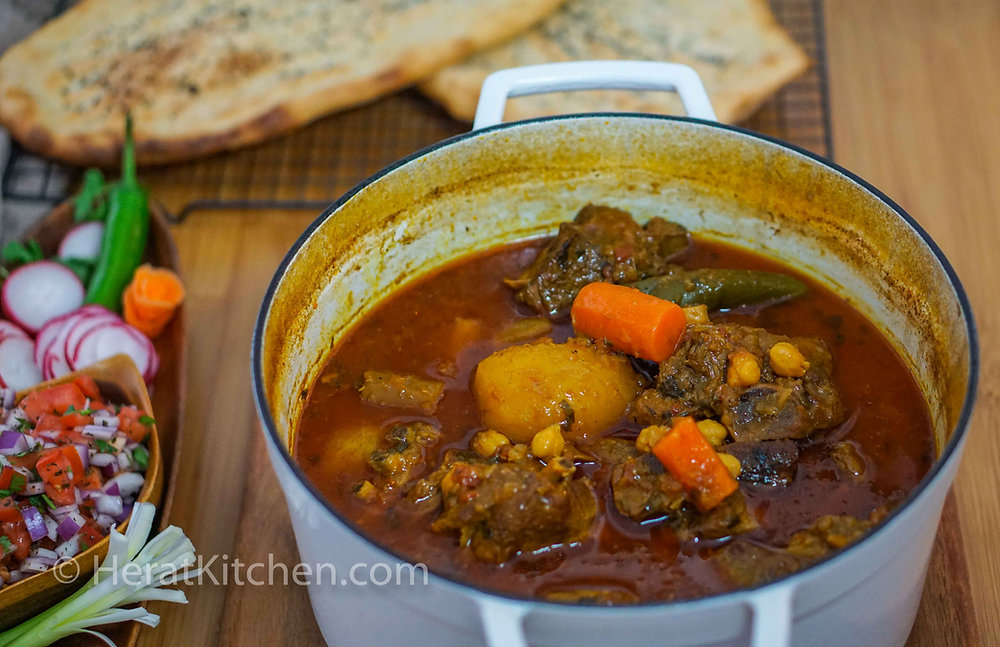

Shorba

Lamb Stew - Shorba
The aroma of shorba (pronounced shorwa) fills both homes and streets in Afghanistan.
Shorba is one of the most common comfort foods amongst both Afghan home cooks and street merchants.
My family and I enjoy this easily and quickly prepared every day meal with a salad and freshly baked bread.
Join us and grab a bowl of this delicious stew!
Ingredients:
- 2 Ibs lamb meat, some pieces with fat in it
- 1 large size onion
- 2 medium size tomatoes
- 1 jalapeno chili pepper
- 4 carrots
- 3 potatoes small/medium size
- 1 tbsp garlic paste
- ½ tbsp ginger paste
- 1½ tbsp tomato paste
- 2 tbsp fresh cilantro leaves
- 2 tbsp oil
- ¼ cup chickpeas soaked for 1 hour
- 1 tsp salt
- 1 tsp black pepper
- 1 tsp turmeric powder
- ½ tsp cinnanom
- 6 cups hot water
Steps:
- Prepare the vegetables. Peel and wash the potatoes, onion, tomatoes, and carrots
- I like to use smaller whole potatoes in my stew. Cut the onion in small pieces. Using a food processor, chop the onion. Pulse a few times until onion is finely chopped and put aside. Cut the tomatoes into smaller pieces. Then pulse in a food processor until crushed and put aside. Next, peel the carrots, cut them in about two inch pieces and put aside. Lastly, wash the cilantro and finely chop.
- Add the meat and 2 tablespoons of oil in a pot. Fry the meat for 5 minutes.
- Add the chopped onions and fry for 2 minutes.
- Add the garlic paste, ginger paste, tomato paste, crushed tomatoes, cinnamon, salt, pepper, turmeric powder, chickpeas, carrots, cilantro, potatoes, and jalapeño. Mix everything together and stir for 2 minutes. Some people like to skip step 1 and 2 and throw all the ingredients in the pot at once. I prefer to fry the meat and onion first as I think this gives the stew the best flavor
- Add 6 cups of hot water. You can add more or less water depending on how thick you want your stew
- Place the pot in the oven and cook over 350 degrees for 2 hours
- Serve in a bowl. Enjoy!
Home